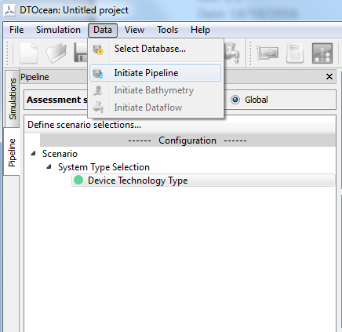

5. Graphical User Interface¶
5.1. Introduction¶
DTOcean provides a Graphical User Interface (GUI). This chapter presents the visual components of the GUI and its main functionalities. A technical description (i.e. the technologies and architecture) of the GUI can be found in the Technical Manual.
5.2. Key Concepts¶
This section summarises the key concepts that need to be understood whilst using DTOcean.
- Project: A project is the overarching container for a design session using the DTOcean software. Projects contain one or many Simulations and can be saved and reloaded.
- Simulation: A simulation refers to a single calculation of LCOE for a given set of computational modules. Simulations and the thematic assessments of their results are configurable by the user.
- Module: Computational module are the main functional engines of the DTOcean software, manipulating existing and creating new data for a particular purpose (such as solving the layout and power output of the array of OECs).
- Assessment: Assessments are used to provide key metrics to compare different farm design simulations. Thematic algorithms provide the assessments.
- Learning Strategies: Learning strategies are used to calculate the value of LCOE for a complete computationally defined farm. Various levels of learning strategies can be used from the most basic to more complex strategies for finding solutions closer to the optimum.
- Data: Data refers to variables that are required as inputs to the computational modules and thematic algorithms, and the results obtained from them.
- Database: The database is a persistent store of data that can be used to support the needs of the design process. It contains both long standing reference data and project specific data, although this data is prepared prior to creating a project.
- Levels: A “level” refers to the state of the data after execution of a particular module. The software can recall any level in any simulation and compare between them.
- Pipeline: The pipeline provides a structured methodology for preparing simulations, visualising the order of execution and examining results.
- Tools: Tools are small functions that can be used to manipulate or create new data to aid the operation of the software. Unlike the computational modules, however, they do not have any design purpose and work (mostly) on one, rather than many, variables.
5.3. Layout¶
Fig. 5.1 Main layout
The main feature of these existing layouts are a large visualisation area (normally to the right), which is often interactive, and a tree like structure to the left where simulations, maps, charts, visualisations, etc. are configured and prepared. The DTOcean software shares these two main components.
The chosen layout for the DTOcean software is shown in Fig. 5.1. At the top of the layout there are the menus and icon bar. Below these, on the left hand side of the screen, lies a dock window with two tabs; one relates to a particular simulation (pipeline dock), and the other lists all the simulations within a project. As more simulations are added to a project (automatically by a strategy or manually by the user), they will will be added in the simulation tab on the left. The dock area labelled as the “Pipeline” (and this name is used to identify this area in some actions) is used to control simulations by interacting with computational modules, thematic assessments and data.
Here, the entry/visualisation window is labelled as “Data Entry/Visualisation.
Below the Data Visualisation area is an area named the “System Dock”. As the name implies, the primary purpose of this area is to show the logging information being generated by the core, computational modules and thematic algorithms.
5.5. Pipeline Widget and Status Indicators¶
Fig. 5.3 The “pipeline” tree widget
The “pipeline” concept uses the familiar tree structure seen in a number of scientific computational packages. Generally, this tree structure, to the left hand side of the screen, allows detailed investigation into the components of the system being investigated.
Fig. 5.3 shows the default layout of the pipeline, once it’s been initiated (after connecting to a DTOcean database). There are two default sections, describedas follows:
- Configuration - This is the area that is used to set up a Simulation, choose a site and technology, prepare the inputs for the modules and themes and provide information for any learning strategies
- Results This area contains results carried out by each module as well as by the thematic algorithms
Displayed within the branches of the tree (such as a branch for the Hydrodynamics module) are individual items of data that can be manipulated and visualised. These variables also have indicators of various colours to describe the status of the data it contains. The indicators for input variables can be seen in Fig. 5.4.
For inputs, the meanings of these indicators for the variables are as follows:
- Green circle: The data for the variable has been entered
- Red square: The data for the variable is required and has not been entered
- Blue diamond: The data for the variable is optional and has not been entered
- Grey cross: The data will be supplied by the outputs of another module
For outputs, the meanings change:
- Green light: The data for the variable is available
- Grey cross: The data has been overwritten by another module
Fig. 5.4 Coloured status indicators within the pipeline widget
5.6. Data Entry and Visualisation Widgets¶
Fig. 5.5 Example data entry widget for selecting from a list of strings
The central Data Window can be used to both enter data and visualise basic result values, such as strings, integers and floating point numbers. Fig. 5.5 provides an example of a widget for collecting a string from a predefined list (nominally set in the data definition specification files, but also potentially being supplied by the database).
In general, these widgets contain a contextual data entry part (in this case a drop down list), based on the structure definition given in the data definition specification (DDS). Different widgets are matched to the different types of data that are required.
Below this data entry section are a standard set of buttons, with actions as follows:
- OK: this action adds the data entered through the widget into the software
- Cancel: this action removes the stored data from the software
Fig. 5.6 A chart in the Data Visualisation window
Both input and output data may have charts which can be visualised with the Data Visualisation area as demonstrated in Fig. 5.6. Again, these charts are generated given the context of the data structure defined in the DDS. The plots can be saved.
The Data Entry area can also be used to show outputs as seen in Fig. 5.7. Again, the format of these outputs is contextually based on the data structure being displayed.
Fig. 5.7 Data output widget matching the chart in the previous figure.
5.7. System Dock and other Dialogues¶
This area of the GUI allows the user to observe the actions of the underlying system. The logging window will automatically collect the logging information being produced by the core, modules and thematic assessments and display it to the user as seen in Fig. 5.8.
Fig. 5.8 The Logging and Terminal tabs of the System Widget
Fig. 5.9 A selection of pop-up dialogues with various functions
The software also utilises a number of pop up dialogues which are used for specialised functions. Some examples of this are the selection of modules, themes and strategies using a shuttle dialogue, or progress bars to indicate progress of data download or module execution. Some examples of these dialogues can be seen in Fig. 5.9.
5.8. Project Scenario¶
5.8.1. Summary¶
The following scenario considers using the DTOcean software to investigate an array deployment scenario. The aim is to prepare and execute a simulation, examine the results, and then make a modified simulation to evaluate the impact of design changes. Each of the following subsections represents a logical step in this process, starting from opening the software for the first time.
5.8.2. Opening DTOcean¶
The user opens the DTOcean GUI and is presented with the menus and shortcut icons only. Most of these will be inactive until a new project is opened.
The user can select “New Project” from the “File” menu as seen in Fig. 5.10 which will lead to the layout skeleton appearing.
Fig. 5.10 Creation of a new project
5.8.3. Modification of the Database¶
Additional actions may be available for the open project from the database menu such as these functions:
- Cloning the master database to create “personal” copies.
- Editing database entries
The user may choose to undertake these actions before activating their chosen database for their project. Note, the provision of these functions is provided as part of the DTOcean database development, and are considered extensions of the baseline functionality.
5.8.4. Activating the Pipeline¶
Activating the pipeline is an option available within of the Database menu. Essentially, this means choosing which database should be used to provide the scenario data. This is assumed to be a choice between the original master database and any clones that have been made by the user, as seen in Fig. 5.11.
Once the pipeline is activated, new information will appear within the pipeline browser, under the scenario category.
5.8.5. Entering Scenario Selections¶
In order for the database to fulfil the requirements of the scenario, the user must enter certain data. The particular data that must be provided is now displayed under the Scenario main category as seen in Fig. 5.12. It will be indicated if certain data has not been provided yet (using a red icon).
Some of the inputs may also require to be made unavailable (grey) until other information has been entered. For instance, defining the deployment area does not make sense until the site has been selected.
Once the user selects one of the required inputs, the data entry section below the pipeline activates and shows certain fields that can be modified in order to fulfil the data requirements. For instance, for site selection there may be a selection of possible sites, displayed in a drop down menu. The user then selects a site, and presses an “Apply” button. At this point, it might be possible to provide a visual output of the site selection in the data visualisation area of the screen.
Selection of the site activates further options such as selecting the deployment area for which the user will set the range of coordinates. Thus, the user continues entering data in a similar manner until all of the parameters specifying the scenario have been entered.
Fig. 5.11 Initiating the pipeline
Fig. 5.12 Scenario inputs
5.8.6. Selection of Modules and Assessment Criteria¶
Following the scenario specification, the user selects which modules and assessment criteria they wish to include in the simulation. It is important to carry out this selection at this stage as it will govern the data requirements for the overall simulation. The user can select the modules and assessment criteria either from the “Simulation” menu or from the contextual menus available from the “Modules” and “Assessment” pipeline categories, as shown in Fig. 5.13.
When choosing to add modules from the Simulation menu, a “transfer box” will open, where the user can move the modules from the inactive side to the active, as seen in Fig. 5.14. Note that there is no option to reorder the modules, as the order of execution of multiple modules will be controlled automatically within DTOcean.
A similar widget is used for the thematic assessment functions.
Fig. 5.13 Adding modules from the Simulation menu
Fig. 5.14 Adding modules in “transfer box”
5.8.7. Initiating the Dataflow¶
Once the required modules and assessment functions have been chosen, the user is required to select “Initiate Dataflow”, either from the simulation menu or using an icon, as seen in Fig. 5.15.
Two actions are initiated by this: firstly, the system will calculate the data requirements given the modules and assessment functions that have been chosen. Once this “dataflow” has been calculated, the system will then collect data from the database which satisfies the input requirements. The progress of these actions can be shown to the user utilising a pop up widget should they require significant amounts of time.
Fig. 5.15 Initiate dataflow menu
5.8.8. Finalising Data and Configuring Modules¶
Once the dataflow has been initialised, the modules and assessment functions will become active in the pipeline. The user can then perform various actions, such as configure certain options for each module or function, or inspect and set values for data. An example of this process is shown in Fig. 5.16. The indicators of completion will be given in the pipeline once all necessary data to fulfil the criteria of the module inputs has been supplied.
Fig. 5.16 Scenario configuration
The user can supply information in various ways (e.g. manual input or files). The user can also choose to override inputs from the database at this stage. These new values will be stored within the simulation for the time of the session (or longer should the user choose to save the project). Note that the database values are not updated.
5.8.9. Preparing the Strategy¶
Having fulfilled all of the criteria of the module, the user can now select a strategy to run simulations. The most basic strategy is to execute all the modules sequentially. For more complex strategies, the user will need to control some parameters for which to attempt improve the LCOE. This is for a single parameter from the inputs with some ranges to test (i.e. a single variable sensitivity study), or a more complicated strategy possibly with some combinations of parameters as described in the requirements for the sequencing and optimisation component.
5.8.10. Running a Simulation with a Basic Strategy¶
Once all of the required inputs have been satisfied the user will select “Run Strategy” from the Simulation menu or from the icons. Initially, it will be checked if the user has fulfilled the input requirements and if not, those that are still required will be displayed.
If the data requirements have been satisfied then the user will be informed that the simulation has started and they will be able to track the progress of the simulation in the logging menu. Should the simulation fail for some reason (e.g. a crash or exceed accuracy targets), the user will be informed by a dialogue with the possibility to examine the cause of the failure in the logging window. Similarly, when the simulation is complete, the user is informed with a dialogue box.
5.8.11. Visualising Results¶
The results of the simulations are displayed in the pipeline using two sections as shown in Fig. 5.18. The “Results” section displays the aggregated global values of the assessment criteria (the results from all modules amalgamated into single metrics or charts).
Additionally, the current value of all the variables related to the executed modules up to and including the last executed module can be seen. When an output variable is selected in the pipeline, an appropriate display will be shown in the data visualisation window.
Fig. 5.17 Using a strategy to attempt to run a simulation which required additional data
Fig. 5.18 Outputs from a module
5.8.12. Changing the Active Module¶
Following completion of a full simulation, obtaining a first attempt at an LCOE estimate, the user of the GUI may wish to go back to a previous state of the data and examine the system at that level of the computation.
There are two methods for the user to change the active module. Both of them can be active while right-clicking on the module the user wants to go back to:
- Reset: it moves the system back to that module, but the user cannot move forward (i.e.e the forward results will be lost)
- Inspect: moves the results back to that module, but the forward results are not lost and the user can move the other modules if run.
5.8.13. Simulation Cloning and Execution¶
Rather than destroy the outcome of the first simulation by changing the inputs to the next module the user can decide to clone the simulation. This creates an exact copy of the active simulation at the level that the user has selected. Thus, if the user creates a clone at the completion of a full simulation, then the clone contains all the results of that simulation. Otherwise, as is most likely, the clone contains the data up to the level selected by the user prior to the cloning process.
Once the simulation is cloned, data can be changed in the clone and the simulation restarted in a similar manner to the original simulation. The most basic strategy will be able to restart the simulation at an intermediate stage and then complete it.